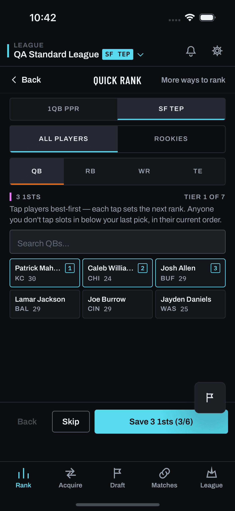

Roster-first setup
A lab for one question: what does the first Find a Trade in a league look like when it starts from your own roster (who you'd move, who you'd keep, and how you order your own players) instead of a market-value deck? Binding docs: docs/plans/roster-first-trade-setup/ (prd.md, scope.md, analytics.md).
Capture vs reconstruction (mockups/CLAUDE.md interim posture)
The setup screen is new, so it has no capture. §0 embeds the two real captures it builds on, from the 2026-08-11 freeze. quick-rank/step--clicked.png is still exact: QuickRankScreen.tsx has 0 commits since the capture date. trades/populated.png is stale: TradesScreen.tsx has 55 commits since and TradeDnaSheet.tsx has 6, so TradesHome today differs from it. Every frame in §1–§4 is a labelled reconstruction drawn from the PRD, not from the running app. Player names are illustrative.
0 · Today (real captures)


1 · Step 1 — roster toggle view
Every rostered player and owned pick, grouped QB / RB / WR / TE / Picks. Each asset has three states. Each tap autosaves through the existing POST /api/league/asset-prefs. The control uses neutral fills with a glyph plus an underline for the selected state, never color alone (#360 R-15). Ice is reserved for the one primary action.
Your roster
picks_pool_cap, so it is greyed with "not in trade search": it saves, but the engine never sees it (prd §4.2).Your roster
| State | Stored as | Engine reads it as |
|---|---|---|
| Move | asset_preferences.list_type='trade_block' (new value, Q1) | Give-side twin of targets: owner priority +outgoing, +0.1 interest when selling; bilateral +0.3 declared, joins the declared_intent path. Flag-gated. |
| Keep | list_type='untouchable' (existing, Q2) | Unchanged. Owner-v1 releases him only for a same-position market upgrade; legacy paths hard-exclude him. |
| — | no row (list:'none') | Nothing. The pre-existing behaviour. |
2 · Step 2 — rank my roster
The same chip grammar as Quick Rank, but scoped to your roster at one position. A position with fewer than 2 players is skipped. Save & next posts /api/rankings/reorder {position, ordered_ids} with only these IDs and no via. That permutes only these players' Elos, and each becomes an explicit source for the engine. About 21 taps plus 4 saves for a 28-player roster; Done ranking exits at any point.
Rank your RBs
tierForElo). Tapping order may cross tiers; that is the point ("my RB4 is better than my RB2"). The "consensus for 6 of 8" line is the honest version of why this matters: unranked players are priced at market. The chips are clickable in this lab.Rank your TEs
server.py:20638), so a personal pick order would have nowhere to land (Q5).What this step can't capture (Q4)
Reordering only swaps values among your own players. It can say "I like my RB4 more than the market does, relative to my RB2", but never "I value my whole roster above market", which is what the eval's "giving too much value" passes suggest. The v2 candidate is one tier question per position ("Where does your best RB sit?"), written through the Quick Set tier path.
3 · Done — the deck regenerates once
You're set
'roster_setup', and TradesHome's focus effect forces one fresh job and diffs it against the deck that loaded underneath. No changes means "Nothing changed. Your trades use consensus values." and no regeneration.4 · Return paths and re-prompt
Find a Trade
(not drawn — see the §0 capture)
QuickSetPromptCard card grammar with its snooze ladder: Not now → one re-offer in a later session → retired. Never dismissed forever. Impression via existing prompt_shown {surface:'roster_setup_card'}.Find a Trade
seenAssetIds in the device store. It opens Step 1 filtered to the new assets only. Losing assets never prompts: their tags go inert because the engine only meets IDs on a roster.Find a Trade
full Trade DNA sheet. The flare inset marks the row this lab adds; it is a highlight for review, not part of the shipped UI. "Off the table" stays because untouchables can also be set from cards.Decisions this lab does not make
Q1–Q6 in prd.md §0: a new trade_block list vs mapping onto existing prefs; Keep = untouchable; nudging league-mates; ordering vs absolute tiers; pick ranking; device vs server completion state.